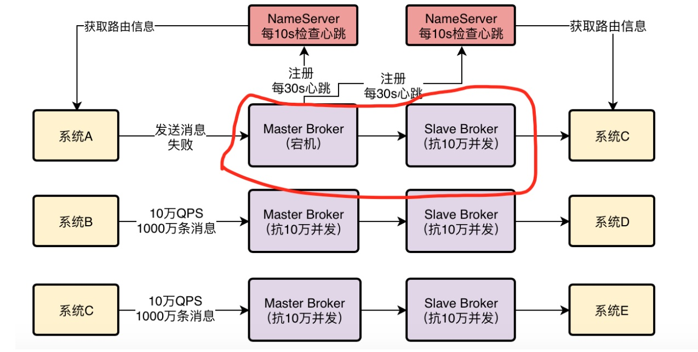
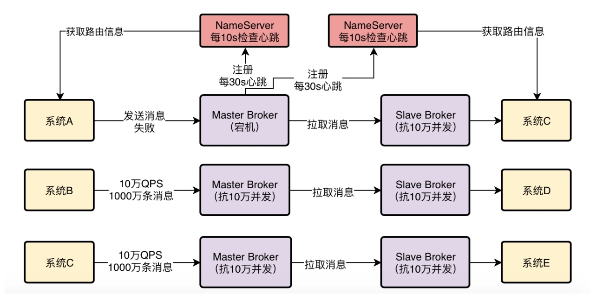
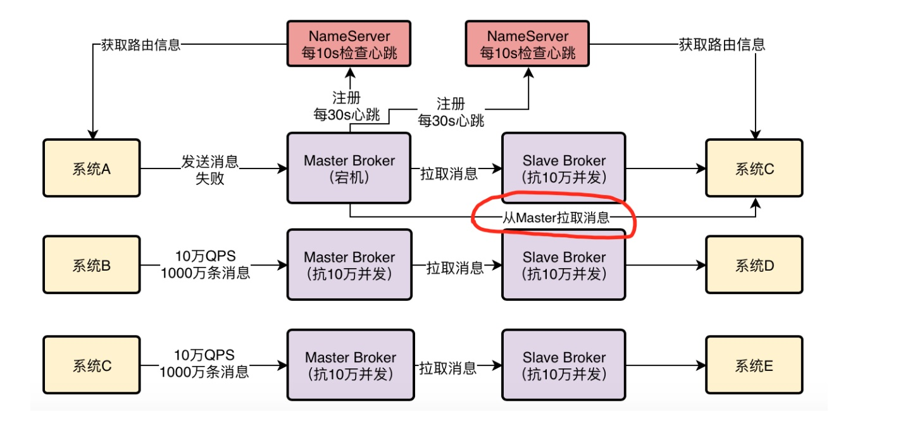
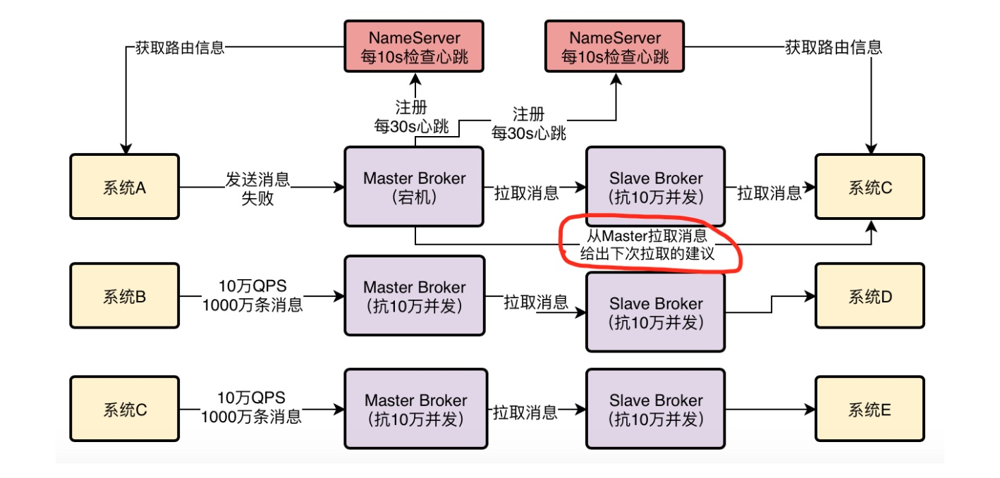
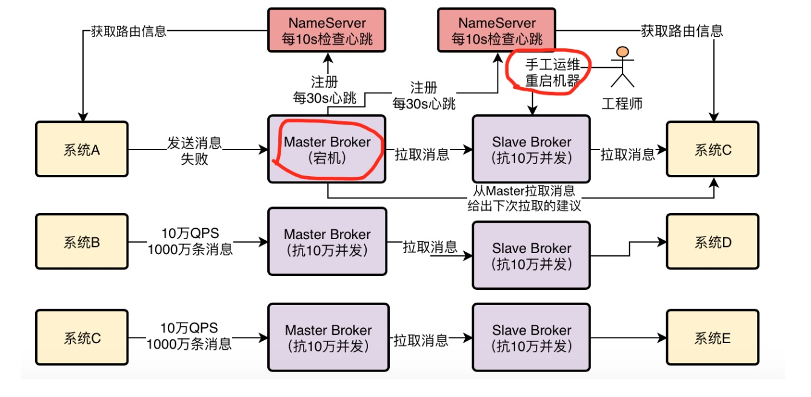
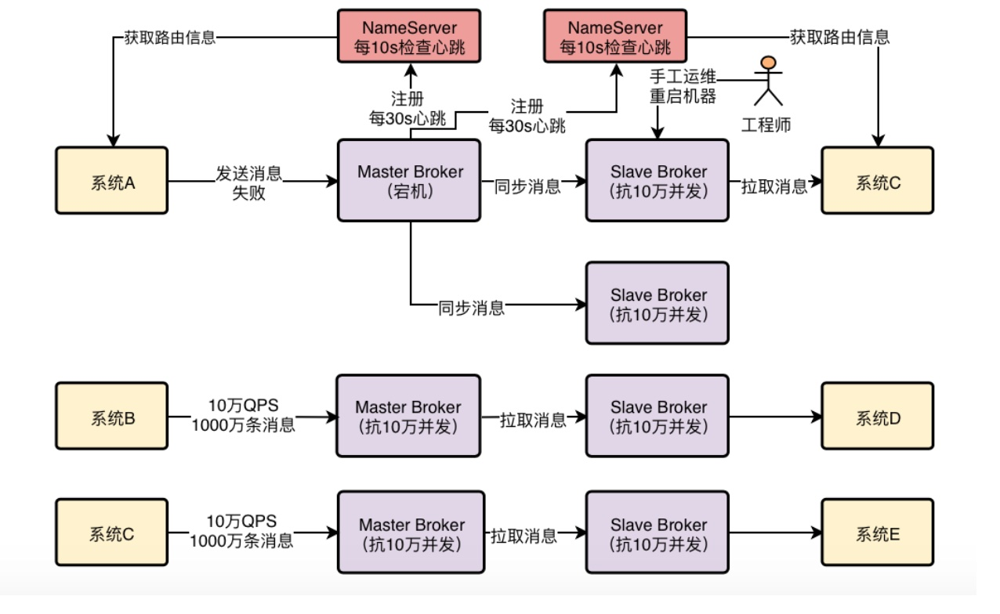
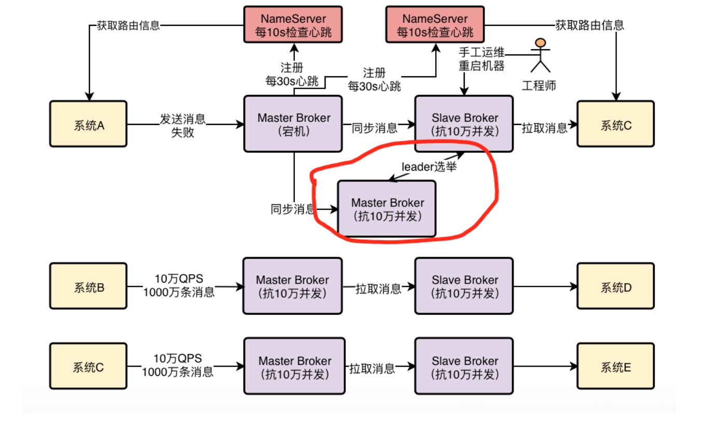

1、将目光从 NameServer 转移到 Broker
小猛上次的NameServer技术分享做的非常成功，大家都通过分享学到了更多的东西，尤其对RocketMQ集群运作的原理，有了更进一步的认识
不过好多人都想对Broker的原理有更多的了解，毕竟最终实现MQ功能的就是Broker。
因此小猛也将自己研究RocketMQ的目光从NameServer转移到了Broker上，他花了一些时间对Broker的原理做了研究，也积累了一些心得体会，接着他又做了一份PPT，打算给大家再做一次Broker原理的分享。
这一天，小猛再次把大家都叫到了会议室，开始了他的第三次技术分享：RocketMQ Broker原理分析
2、Master Broker是如何将消息同步给Slave Broker的？
先来看第一个问题，我们都知道，为了保证MQ的数据不丢失而且具备一定的高可用性，所以一般都是得将Broker部署成Master-Slave模式的，也就是一个Master Broker对应一个Slave Broker
然后Master需要在接收到消息之后，将数据同步给Slave，这样一旦Master Broker挂了，还有Slave上有一份数据。
小猛说着打开了一张图：

说明：
Slave Broker也会向所有的NameServer进行注册，图中没有画出！
Slave Broker也会向所有的NameServer每30s发送心跳，图中没有画出！
在这里，我们先考虑一个问题，Master Broker是如何将消息同步给Slave Broker的？
是Master Broker主动推送给Slave Broker？还是Slave Broker发送请求到Master Broker去拉取？
答案是第二种，RocketMQ的Master-Slave模式采取的是Slave Broker不停的发送请求到Master Broker去拉取消息。
所以首先要明白这一点，就是RocketMQ自身的Master-Slave模式采取的是Pull模式拉取消息。
小猛说着又打开了一个图，在图里他标识出来了Slave拉取消息的示意：

3、RocketMQ 实现读写分离了吗？
下一个问题，既然Master Broker主要是接收系统的消息写入，然后会同步给Slave Broker，那么其实本质上Slave Broker也应该有一份一样的数据。
所以这里提出一个疑问，作为消费者的系统在获取消息的时候，是从Master Broker获取的？还是从Slave Broker获取的？
其实都不是。答案是：有可能从Master Broker获取消息，也有可能从Slave Broker获取消息
作为消费者的系统在获取消息的时候会先发送请求到Master Broker上去，请求获取一批消息，此时Master Broker是会返回一批消息给消费者系统的
小猛说着打开了一张图，里面有这个示意。

然后Master Broker在返回消息给消费者系统的时候，会根据当时Master Broker的负载情况和Slave Broker的同步情况，向消费者系统建议下一次拉取消息的时候是从Master Broker拉取还是从Slave Broker拉取。
举个例子，要是这个时候Master Broker负载很重，本身要抗10万写并发了，你还要从他这里拉取消息，给他加重负担，那肯定是不合适的。
所以此时Master Broker就会建议你从Slave Broker去拉取消息。
或者举另外一个例子，本身这个时候Master Broker上都已经写入了100万条数据了，结果Slave Broke不知道啥原因，同步的特别慢，才同步了96万条数据，落后了整整4万条消息的同步，这个时候你作为消费者系统可能都获取到96万条数据了，那么下次还是只能从Master Broker去拉取消息。
因为Slave Broker同步太慢了，导致你没法从他那里获取更新的消息了。
所以这一切都会由Master Broker根据情况来决定，小猛说着打开了一个图，里面有示意。

所以在写入消息的时候，通常来说肯定是选择Master Broker去写入的
但是在拉取消息的时候，有可能从Master Broker获取，也可能从Slave Broker去获取，一切都根据当时的情况来定。
4、如果Slave Broke挂掉了有什么影响？
下一个问题：如果Slave Broker挂掉了，会对整个系统有影响吗？
答案是：有一点影响，但是影响不太大
因为消息写入全部是发送到Master Broker的，然后消息获取也可以走Master Broker，只不过有一些消息获取可能是从Slave Broker去走的。
所以如果Slave Broker挂了，那么此时无论消息写入还是消息拉取，还是可以继续从Master Broke去走，对整体运行不影响。
只不过少了Slave Broker，会导致所有读写压力都集中在Master Broker上。
5、如果Master Broker挂掉了该怎么办？
现在假设出现了一个故障，Master Broker突然挂了，这样会怎么样？
这个时候就对消息的写入和获取都有一定的影响了。但是其实本质上而言，Slave Broker也是跟Master Broker一样有一份数据在的，只不过Slave Broker上的数据可能有部分没来得及从Master Broker同步。
但是此时RocketMQ可以实现直接自动将Slave Broker切换为Master Broker吗？
答案是：不能
在RocketMQ 4.5版本之前，都是用Slave Broker同步数据，尽量保证数据不丢失，但是一旦Master故障了，Slave是没法自动切换成Master的。
所以在这种情况下，如果Master Broker宕机了，这时就得手动做一些运维操作，把Slave Broker重新修改一些配置，重启机器给调整为Master Broker，这是有点麻烦的，而且会导致中间一段时间不可用。
小猛说着打开了一张图，在图里他标识出来了Master故障情况下的手工运维的情况。

所以这种Master-Slave模式不是彻底的高可用模式，他没法实现自动把Slave切换为Master
6、基于Dledger实现RocketMQ高可用自动切换
在RocketMQ 4.5之后，这种情况得到了改变，因为RocketMQ支持了一种新的机制，叫做Dledger
本身这个东西是基于Raft协议实现的一个机制，实现原理和算法思想是有点复杂的，我们在这里先不细说。
因为。。。小猛说到这里，挠了挠头，有点不好意思的说到，我也是最近明哥给了任务之后才开始研究RocketMQ的，一些东西还没研究那么深。不过等我们后面一边在实践RocketMQ技术的时候，我会一边继续深入研究的，以后如果有机会再给大家再做技术分享，专门分析这个Dledger底层的原理。
今天我先讲讲基于Dledger可以实现RocketMQ的高可用自动切换的效果。
简单来说，把Dledger融入RocketMQ之后，就可以让一个Master Broker对应多个Slave Broker，也就是说一份数据可以有多份副本，比如一个Master Broker对应两个Slave Broker。
然后依然会在Master和Slave之间进行数据同步，小猛说着打开了一张图。

此时一旦Master Broker宕机了，就可以在多个副本，也就是多个Slave中，通过Dledger技术和Raft协议算法进行leader选举，直接将一个Slave Broker选举为新的Master Broker，然后这个新的Master Broker就可以对外提供服务了。
整个过程也许只要10秒或者几十秒的时间就可以完成，这样的话，就可以实现Master Broker挂掉之后，自动从多个Slave Broker中选举出来一个新的Master Broker，继续对外服务，一切都是自动的。
小猛说着就打开了另外一张图，在图里就有Slave自动选举，以及Slave切换为新的Master的过程。

所以。。。说到这里，小猛对下面一直沉默听分享的明哥说，我觉得我们在设计RocketMQ生产部署架构的时候，完全可以采用基于Dledger的部署方式，这样可以让RocketMQ做到自动故障切换了！
明哥听到这里，对小猛非常的赞赏。小猛非常靠谱，把一些关键的问题都梳理的很清晰，包括Broker主从同步原理、故障时的自动切换缺点、最新版本的Dledger自动切换改进，这些问题都已经考虑到了。
大家听到这里，也是一阵热烈的掌声，因为随着分享的推进，每个人都觉得RocketMQ这个技术到落地实践的距离更近了。